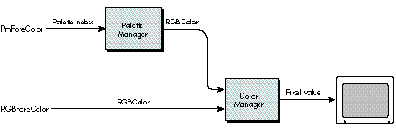

No part of the Macintosh graphics environment is more feared, hated, or
misunderstood than the Palette Manager. The Developer Support Center gets many
questions about it from people who don't have any idea how to get it to do what they
want. We've seen many people just give up on the Palette Manager completely and
instead use lower-level routines that are much more difficult to use but easier to
understand quickly.
The Palette Manager is actually very simple. It has no complicated heuristics that only
rocket scientists can understand. In this column, we'll show how the Palette Manager
gets its job done, and we'll talk about a couple of issues that you'll have to deal with to
make your palettes do what you want them to do. You'll see that the Palette Manager is
both easy to understand and a very useful part of the Macintosh Toolbox.
Before you read this column, it would be a good idea to read the Palette Manager
chapter (Chapter 20) ofInside MacintoshVolume VI, which lays down the terminology
that we'll use here.
WHAT HAPPENS WHEN A PALETTE IS ACTIVATED
The critical job that the Palette Manager does is activate a palette. This happens
whenever you call SetPalette or ActivatePalette for the frontmost window and
whenever a window that has a palette is activated. When a palette is activated, the
Palette Manager loads the palette colors into the screen's color table. How it goes about
doing this is determined by the usage mode of each entry in the palette.
You indicate an entry's usage mode by setting a flag in its usage field. There are four
usage modes: pmCourteous, pmTolerant, pmAnimated, and pmExplicit. You can choose a
separate usage mode or combination of usage modes for each entry in a palette, or you
can give all the entries the same usage mode. Let's take a look at what each usage mode
is good for and what effect each one has when a palette is activated.
pmCourteous. The pmCourteous usage mode enables you to replace RGBColor records
in your code with single integers. Thus, having a palette of courteous colors gives you
an alternative way to specify foreground and background colors. This is great for
localizers who might need to change the colors in your program to something more
meaningful in other countries, and it's great for you if you feel like changing a color
without recompiling.
Activating a palette of courteous colors simply tells the Palette Manager to use your
window's palette as a sort of lookup table. When your window is the current port and
you call PmForeColor or PmBackColor with a palette index, the Palette Manager
simply retrieves the color in your window's palette at that index and uses it for any
subsequent drawing to that window. Courteous colors never change the screen's color
table -- they get mapped to the closest colors already available there.
Here's an example: Without the Palette Manager, you would draw a green oval in a
window by setting up an RGBColor record with a red component of 0, a green
component of 65,535, and a blue component of 0 and passing this record to
RGBForeColor; then you would call FrameOval. To change the oval to blue, you would
modify your RGBColor record in your source code and recompile your program. Now,
suppose instead you brought in the Palette Manager by setting up a palette resource
(resource type 'pltt') that contained one courteous entry -- green -- with an index of
0. In your code, you would call PmForeColor(0) instead of RGBForeColor with green.
When you called FrameOval, the oval would be drawn in green. To change the color to
blue, you would just use ResEdit to modify the green entry in your 'pltt' resource to
blue. So calling PmForeColor for a courteous palette entry is just like calling
RGBForeColor, but instead of supplying the RGB components, you simply pass an index
into the palette, where the index points to the color's RGB components (see Figure 1).
pmTolerant. The pmTolerant usage mode is used when you want to be sure that a
specific set of colors is available to the screens that your window is on. It's a bummer
to draw a rainbow in a window on a screen that another application has removed all the
greens and yellows from. You need a palette of tolerant colors to assert your
application's right to the colors it needs to display its images optimally. With such a
palette, you can change the colors in a screen's color table to ones that you want.
Before we look at how a palette of tolerant colors is activated, realize that Color
QuickDraw always wants white in the first entry of a screen's color table and black in
the last. To enforce this rule, Color QuickDraw protects these two entries from being
changed to other colors. That means a palette of tolerant colors can change all the
colors of a screen's color table except two.
When a palette of tolerant colors is activated, the Palette Manager checks each entry
in the palette and associates it with an entry in the screen's color table. Let's say we
have a palette with three entries -- bright green, black, and dark yellow -- attached
to a window on a 16-color screen. All three palette entries are tolerant, with a
tolerance of 0. The Palette Manager does the following: 1. It checks the first entry in
the palette, bright green, and searches the screen's color table for the same bright
green. It finds that color near the middle of the color table, and so associates palette
entry 0 with this existing bright green entry in the color table. 2. It searches the
screen's color table for the second entry in the palette, black. It finds it at the very
end, so palette entry 1 corresponds to entry 15 of the color table. 3. It searches the
screen's color table for dark yellow. There isn't one, so it chooses a color table entry
to change to dark yellow. It can't choose the black or the white entry because they're
protected and can't be changed, and it can't change the bright green entry because that
entry is already associated with entry 0 of the palette. So it chooses one of the other
color table entries and changes it to dark yellow.

Figure 1 Alternative Ways to Specify a Foreground Color
Because the color table has been changed, the Palette Manager makes sure that other
windows are redrawn, just in case they were drawn using the color table entry that
was changed to dark yellow. It does this by sending update events to all windows as soon
as the palette is activated. If no color table changes were needed, the Palette Manager
doesn't bother doing this.
Once our three-entry palette has been activated, we can call PmForeColor, passing it
0, 1, or 2 to draw objects in bright green, black, or dark yellow, respectively. In
fact, we could call RGBForeColor, passing it bright green, black, or dark yellow
RGBColor records, and they would use the same colors that our palette loaded into the
screen's color table. Figure 1 applies to palettes of tolerant colors as well as palettes
of courteous colors. If there are more palette entries than will fit in the screen's
color table, the Palette Manager associates each palette entry with a color table entry
until no more color table entries are available and then interprets the rest of the
palette entries as courteous. For example, let's say a 20-entry palette is activated on a
16-color screen, where each palette entry is pmTolerant with a tolerance of 0 and
neither black nor white is in the palette. Beginning with the first palette entry, the
Palette Manager associates each entry with a color table entry. The 15th palette entry
can't be associated with any color table entry because the black and white entries are
protected from changes and all 14 other entries have already been associated with
palette entries. So the 15th palette entry and all entries beyond it are simply treated
as courteous colors.
pmAnimated. On indexed devices, the pmAnimated usage mode is used to do color table
animation, which gives you smooth, fast visual effects simply by changing the colors
in your screen's color table very quickly. You don't have to redraw anything to see this
animation; you just use the Palette Manager to change the interpretation of the colors
of your existing image. This is great for games and fast controls for image processing
applications. On direct devices, animated entries are treated as courteous entries.
Like pmTolerant entries, each pmAnimated palette entry is associated with an entry in
a screen's color table when the palette is activated, and the colors in the palette are put
into the screen's color table. But changing color table entries for color animation
changes everything on the screen that uses those same color table entries, like the
desktop or window frames. That's usually not what we want, so the Palette Manager
forces everything outside the window to be redrawn without the colors that are being
used for color animation -- those colors are off limits. In fact, the only way to use
those colors is to call PmForeColor or PmBackColor for an animated palette entry and
then draw some QuickDraw object. Remember, the big difference between tolerant and
animated colors is that color table entries that are used for tolerant colors can be used
by anyone, but animated color table entries are used only by objects drawn in the
palette's window after a call to PmForeColor or PmBackColor.
Let's use our three-entry palette as an example again, but this time assume that each
entry is animated. The Palette Manager first takes the bright green entry, picks a
color table entry on the screen, and changes it to bright green. It doesn't matter if
there's already a bright green in the color table. As usual, the Palette Manager avoids
the black and white entries at either end of the color table. It then picks another color
table entry and puts black into it, and does the same for the dark yellow entry. If you
call PmForeColor(0) and draw an object, it's drawn in bright green. But if you call
RGBForeColor for bright green and draw an object, it doesn't use the bright green
that's been defined as animated. Instead, it uses the closest color to bright green
available, aside from any color table entries that have been defined as animated.
pmExplicit. The pmExplicit usage mode is rarely used alone, and there's not much to
it beyond what's described in the Palette Manager chapter ofInside MacintoshVolume
VI. We'll discuss in the next section the more interesting case of using pmExplicit
along with the other usage modes.
ARE BLACK AND WHITE NEEDED IN A PALETTE?
When attaching a palette to a window, the Palette Manager works in a way that affects
whether you should store black and white in the palette. We'll outline the way it works
in two different categories. The first category applies to palettes containing the same
number of entries as the screen's color table, and the second category applies to
palettes containing fewer entries than the screen's color table.
Same number of entries in palette and color table. If the palette contains the
same number of entries as the screen's color table, black and white should be stored in
the palette. If these two entries aren't stored in the palette, the Palette Manager will
ignore two entries in the palette when loading the palette colors into the screen's color
table, to avoid overwriting the color table's black and white entries. The Palette
Manager will decide which palette entries to ignore based on the usage field for each
palette entry.
As an example, let's take the case of a palette all of whose entries are defined as
pmTolerant + pmExplicit. Because the pmExplicit flag tells the Palette Manager to
store each palette entry in its respective index in the screen's color table, the choice
of which palette entry to ignore is fairly straightforward. The colors stored at the
first and last entry of the palette correspond to the protected entries in the screen's
color table, so these entries will be ignored.
In the case of a palette containing entries not defined with the pmExplicit flag set, the
decision of which two palette colors to ignore can seem somewhat random. This is
because the decision is based on the current distribution of the palette entries in the
screen's color table, where the distribution is derived from the tolerance values of the
palette entries and the existing colors in the screen's color table before the palette was
activated.
For example, suppose we have a 16-entry palette and a 4-bit screen color table as
shown in Figure 2 (we've used the default color table). Figure 3 shows how the
screen's color table will look in two different cases when the palette of the frontmost
window has been activated. In these figures, the explicit entries are distributed
sequentially in the screen's color table, whereas the nonexplicit entries are scattered
throughout the color table.
Figure 2 An Example Palette and Color Table
Figure 3 The Color Table With the Palette of the Frontmost Window Active
For the explicit entries, we see that the first and last entries of the palette are not
loaded into the screen's color table, to protect the color table's white and black entries.
However, for the nonexplicit entries, the two palette colors ignored aren't necessarily
the first and last entries of the palette. When determining where the nonexplicit
palette entries should be stored in the color table, the Palette Manager first checks to
see which colors in the screen's color table already match those in the palette. If
there's a match within the specified tolerance, that palette entry is stored at the index
of the matching color in the screen's color table.
And one other thing: When multiple nonexplicit palette entries match (within the
specified tolerance) the same color in the screen's color table, all those palette entries
are stored at the same index in the color table. This means that only one slot in the
color table is needed rather than as many slots as there are palette entries.
Fewer entries in the palette. Now, if the window's palette contains fewer entries
than the screen's color table, the palette entries' usage field plays a large part in
determining whether black and white should be included in the palette. The reason for
this is similar to the previous case for nonexplicit entries.
Figure 4 Another Example Palette and Color Table
Figure 5 The Color Table With the Palette of the Frontmost Window Active
If all the entries in a palette are defined without the pmExplicit flag set, the presence
of black and white in the palette isn't as critical, since the palette entries will likely
be scattered throughout the screen's color table while avoiding the protected white and
black colors stored in the first and last slots of the screen's color table. Since there
are fewer palette entries than color table entries, we needn't worry about palette
entries getting ignored. So in this case, creating a palette without a black entry or a
white entry is perfectly fine as long as there are enough slots in the screen's color
table to hold all the palette entries and the two protected colors.
However, if the palette entries are all defined with the pmExplicit flag set, there's a
good chance that one of the palette's entries will be ignored. And the palette entry that
does get ignored will usually be the first entry in the palette, because this entry
shares the same index as the protected white entry in the screen's color table.
For example, suppose we have a 192-entry palette and an 8-bit screen color table as
shown in Figure 4 (again, we've used the default color table). Figure 5 shows how the
screen's color table will look in two different cases when the palette of the frontmost
window has been activated.
Again, the explicit entries are distributed sequentially in the screen's color table,
starting with the first entry in the color table. Because the first entry in the screen's
color table is protected from being overwritten, the first entry in the palette is
ignored. But in the nonexplicit case, the entries are distributed somewhat differently.
Depending on what colors are already in the screen's color table, the nonexplicit
entries can be stored anywhere throughout the color table. And in this example, since
there are clearly more slots in the screen's color table than needed by the palette
entries, all the colors in the palette appear in the color table; none are ignored. So
again in this case, including black and white in the palette really isn't necessary.
WHERE TO PUT BLACK AND WHITE IN THE PALETTE
We've seen how the way the Palette Manager works can affect whether you decide to
store black and white in your palette. In all the instances we mentioned, the positions
of the black entry and white entry were always the same: white first and black last.
However, in certain cases, you may not want to position white first and black last.
In the case where you'd like to create just one palette to handle devices at multiple bit
depths, the black and white entries should be stored as the first two colors in the
palette. This ensures that the two colors used on a 1-bit device are present. Likewise,
to ensure that the optimal colors are used at depths 2, 4, and 8, we do the same thing
for each additional depth. We store the preferred colors at the appropriate position in
the palette. Figure 6 shows how a typical palette could be configured to handle multiple
bit depths.
In our sample palette, the first 16 colors are defined as shades of gray, because we've
decided our window would look best when displayed in grayscale on a 1-, 2-, or 4-bit
device. For the 1-bit and 2- bit devices, we simply choose the appropriate shades for
those depths and store them in the first four slots of our palette. But for an 8-bit
device, we include as many colors as we can for the optimal display at that depth. For
this example, we added the nongrayscale colors from the standard 8-bit color table to
the remaining slots in our palette. Because the Palette Manager only uses the
maximum number of colors it can (starting at the first index in the palette) for a
specific bit depth, only the colors we want shown will be shown. Also, because the
placement of the colors determines which colors are available at a certain depth, all
the palette entries must be defined as explicit entries.
Figure 6 A Palette Configured to Handle Multiple Bit Depths
Another way of ensuring that certain palette entries are available at certain depths is
to apply the inhibit usage categories to the palette entries. These inhibit constants tell
the Palette Manager which entries are available under the current color environment.
Depending on which inhibit constant is used, the palette entries can be inhibited from a
specific bit depth and from a color or grayscale device. So by combining various
inhibit constants to our sample palette, we can inhibit the colors outside the current
depth's range from being used. In our example, if entry number 16 were defined with
pmInhibitC2 + pmInhibitC4 + pmInhibitG2 + pmInhibitG4
this entry would be available only on an 8-bit or deeper color or grayscale device.
ONE LAST WORD
The Palette Manager works very simply, but it has so many options and effects that it
can seem complicated. By understanding how the Palette Manager makes its decisions,
you should find it easy to figure out how to make it do precisely what you want. We
hope this column has made this clear, so that you can use the Palette Manager and avoid
fussing with the alternatives.
EDGAR LEE (AppleLink EDGAR) Before Edgar's dog, Sunny, departed for the East
Coast, we asked her if she could tell us a little about him. Here's what she had to say:
"Edgar . . . is that his name? Oh yeah, nice human. A little hairless for my taste, but a
good guy. He works over there in DTS or something. He used to come home late all the
time. At first I thought he was seeing another dog, then I realized he's just a nerd. And
how is he to me? Well, let's see, he takes care of me, entertains me. I bark once, he
feeds me; I bark twice, we go out for a walk. Not bad for an owner; I've heard worse
stories. Does he ever get upset with me? I suppose at times he does. I probably deserve
it; carpet cleaning isn't cheap, you know. But hey, I see a clean spot, I go for it."*
FORREST TANAKA (AppleLink TANAKA) has spent the last couple of months
learning how to be a domestic kind of guy. Once worried about paying the rent, he's now
worried about paying the mortgage. Once worried about his downstairs neighbors, he's
now worried about getting the best fertilizer. Now he's even the stepparent of an old
dog and a cat with an attitude. As a final blow to his carefree days of youth, he has to
mow the lawn! *
Indexed and direct devices are discussed in the Graphics Overview chapter
(Chapter 16) of Inside Macintosh Volume VI.*
The inhibit constants are discussed in the Palette Manager chapter (Chapter 20)
of Inside Macintosh Volume VI.*
Thanks to Bill Guschwan, Shannon Holland, Guillermo Ortiz, Konstantin Othmer,
Brigham Stevens, and John Wang for reviewing this column. Special thanks to Joseph
Maurer and Faith Pai. *